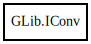

GLib.IConv – glib-2.0 Reference Manual
Packages
glib-2.0
GLib
IConv
open
close
iconv
IConv
Object Hierarchy:

Description:
[
SimpleType
]
public
struct
IConv
Namespace:
GLib
Package:
glib-2.0
Content:
Static methods:
public
static
IConv
open
(
string
to_codeset,
string
from_codeset)
Methods:
public
int
close
()
public
size_t
iconv
(
ref
char
[] inbuf,
ref
size_t
inbytes_left,
ref
char
[] outbuf,
ref
size_t
outbytes_left)